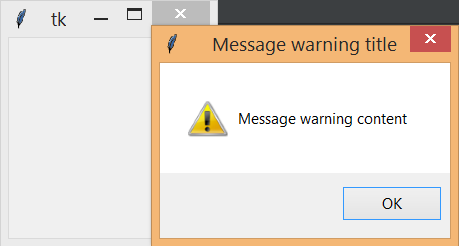

6. Tkinter. Диалоговые окна¶
6.1. Создание диалогового окна¶
Диалоговые окна, как элементы графического интерфейса, предназначены для вывода сообщений пользователю, получения от него какой-либо информации, а также управления.
Создадим свое диалоговое окно. Для примера оно создается используя несколько виджетов:
from tkinter import *
window = Tk()
window.title("Message box title")
window.geometry("300x75")
lbl = Label(window, text="My message content!")
btn = Button(window, text="Ok", width=10, command=window.destroy)
lbl.pack()
btn.pack(side=RIGHT)
window.mainloop()
Результат выполнения:
Мы получили простейшее диалоговое окно, и хотя диалоговые окна весьма разнообразны, их вид уже устоялся. Нет необходимости создавать диалоговые окна с нуля, для это можно использовать «заготовки».
6.2. Messagebox - окно с информацией¶
Для информирования пользователя о процессах происходящих в ПК можно использовать Messagebox - окно с информацией. При этом требуется дополнительно импортировать «подмодуль» Tkinter - tkinter messagbox, в котором описаны классы для окон данного типа.
Код созданного информационного окна может быть следующим:
from tkinter import messagebox
messagebox.showinfo('Message title', 'Message info content')
Результат выполнения:
Для привлечения внимания можно использовать окно предупреждения:
from tkinter import messagebox
messagebox.showwarning('Message warning title', 'Message warning content') #shows warning message
Результат выполнения:
Окно с возникшей ошибкой ПО думаю встречал каждый, на питоне его можно создать, написав следующий код:
from tkinter import messagebox
messagebox.showerror('Message error title', 'Message error content') #shows error message
Результат выполнения:
6.3. Messagebox - окно с вопросом¶
Следующие примеры диалоговых окон, служат для ведения диалога с пользователем и сохранением его ответа в переменной. Попробуйте создать следующие примеры диалоговых окон, подумайте об их различий и где они могут применяться? Напишите комментарий в коде к каждому диалоговому окну:
from tkinter import messagebox
res = messagebox.askquestion('Message title', 'Message ask content')
res = messagebox.askyesno('Message title', 'Message y/n content')
res = messagebox.askyesnocancel('Message title', 'Message y/n/cancel content')
res = messagebox.askokcancel('Message title', 'Message ok/cancel content')
res = messagebox.askretrycancel('Message title', 'Message retry/cancel content')
6.4. Окна открытия и сохранения файлов¶
Рассмотрим, как запрограммировать с помощью Tkinter вызов диалоговых окон открытия и сохранения файлов и работу с ними. При этом требуется дополнительно импортировать «подмодуль» Tkinter - tkinter.filedialog, в котором описаны классы для окон данного типа:
from tkinter import *
from tkinter.filedialog import *
root = Tk()
op = askopenfilename()
sa = asksaveasfilename()
root.mainloop()
Здесь создаются два объекта (op и sa): один вызывает диалоговое окно «Открыть», а другой «Сохранить как…». При выполнении скрипта, они друг за другом выводятся на экран после появления главного окна. Если не создать root, то оно все-равно появится на экране, однако при попытке его закрытия в конце возникнет ошибка.